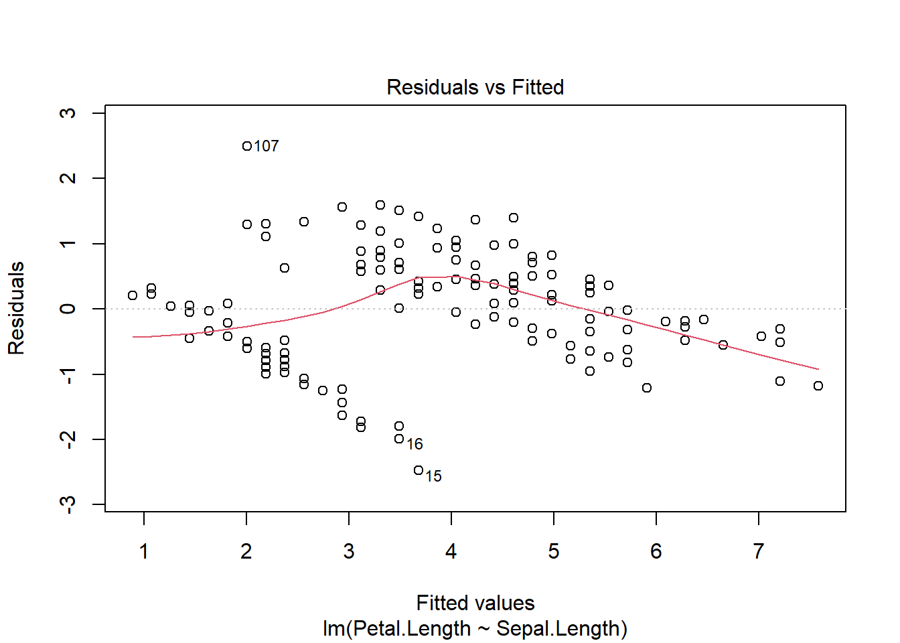
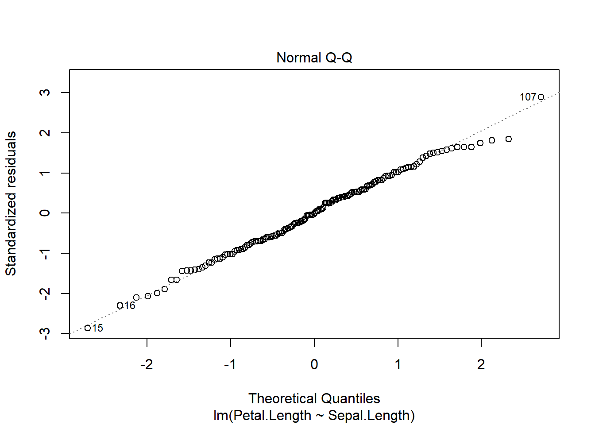
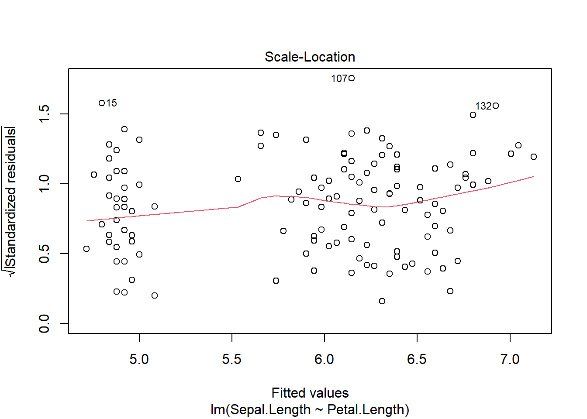
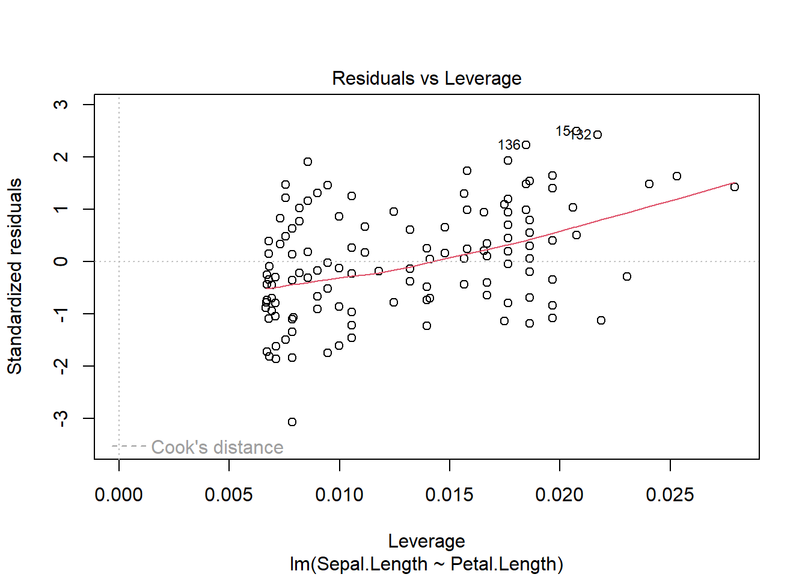
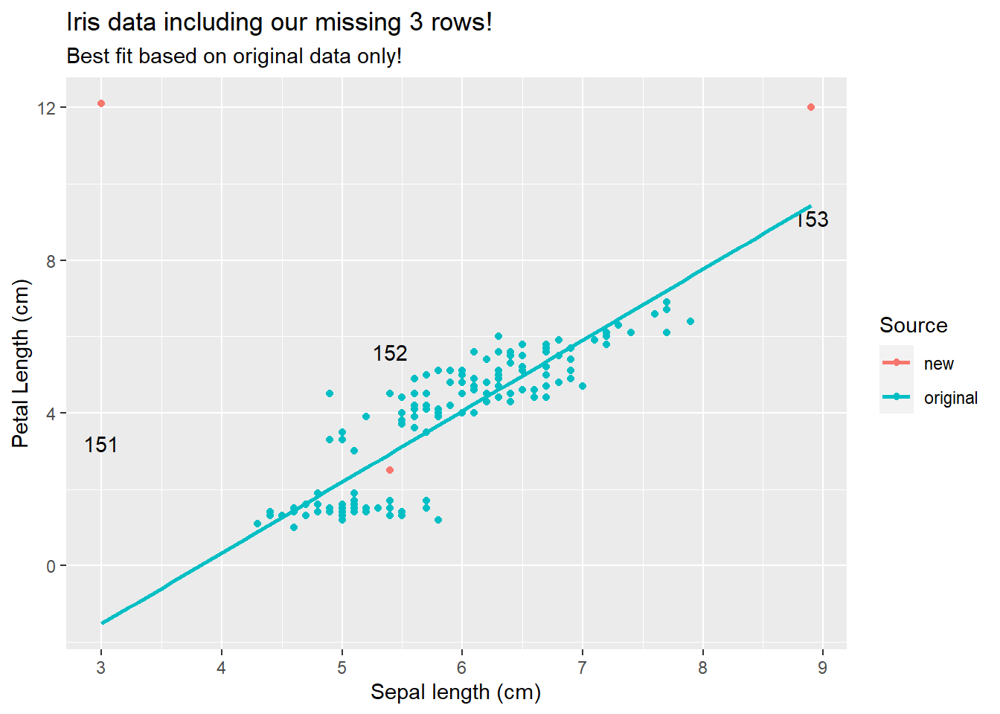
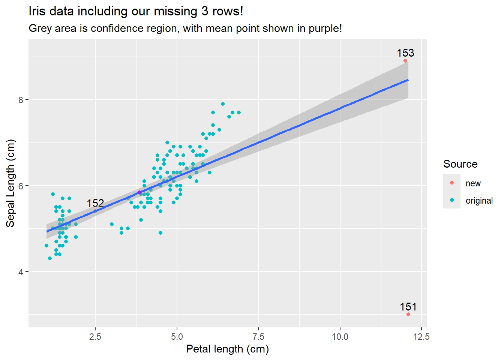

In the last chapter we extended linear models to consider impacts of multiple factors. Continuing that tradition, we will now explore how numerical (and specifically continuous) predictor variables can be used to explain variation in numerical outcome variables.
Back to the iris data
We will motivate this with an example from our favorite iris data. So far we have considered how species impacts measured outcomes. However, we might also want to consider the relationship between traits. For example, we might want to know if sepal and petal length are related. We could plot the data:
Our related hypothesis might be a relationship exists among the variables; alternatively, one does not. To put this our null hypothesis framework, we might write:
\[
\begin{split}
H_O: \textrm{there is not a relationship between sepal and petal length}\\
H_A: \textrm{there is a relationship between sepal and petal length}\\
\end{split}
\]
In other words, we need to gather enough evidence to reject the hypothesis of no relationship. Note we will formalize these hypotheses more in a moment, but how do we test them?
Working with continuous predictors
For some background, consider differences between continuous and categorical predictor variables. Unlike examples of when we transformed continuous outcomes into binomial data, continuous predictors offers information on order and spacing. Compared to un-ordered categorical variables (what we’ve focused on), the numbers mean something! This allows us (with caution) to estimate outcomes from un-sampled regions.
Consider: We know the mean sepal lengths for three species of irises:
But if we find a new species, we actually don’t know what to expect!
However, if we have this graph
sepal_petal_relationship
We might have a guess of the petal length of a flower that has a sepal length of 2.5 cm even though we didn’t measure anything of that size. In fact, you might be able to visualize the relationship:
While we can draw this “line of best fit” by sight, linear models actually give us a way to formally define it (analyze our hypothesis). The line of best fit minimizes the residuals (which means it also offers a prediction any value of sepal length!). This approach, however, also means we are considering linear relationships between our predictor variables (but note our predictor variables themselves could be a transformation of an actual measurement, such as a square root or value cubed!). This is one assumption of linear regression. We can consider non-linear relationships using other techniques (which we will cover later).
If we wanted to carry out a sampling experiment to determine a p-value for our hypotheses, we could sample from a population that represents our sepal lengths and one that represents our petal lengths. If the two populations are not connected, then arbitrary pairs could be made - this would indicate no relationship among the variables. For each dataset, we could note the potential relationship (now occuring by chance!) between our variables, and then compare that null distribution to what we actually observed. To make this approach more generalizable, we could standardize our data points - using these to calculate our error terms for full and reduced models would lead us to F distributions.
Overall, this means we can use a linear model approach to investigate relationships among numerical variables. We can build the model
and a coefficient that shows their relationship. The first parameter is the x-intercept, and the second (the relationship) is the slope of the best fit line!
Once the model is made, we can plot it to check assumptions
plot(iris_regression)




For numerical relationships we typically see more of a cloud of data, but we are still assuming the residuals are normally distributed (with the same variance for all fitted values, i.e. identically distributed) and indepent. Iassumptions are met consider outcomes.
Call:
lm(formula = Sepal.Length ~ Petal.Length, data = iris)
Residuals:
Min 1Q Median 3Q Max
-1.24675 -0.29657 -0.01515 0.27676 1.00269
Coefficients:
Estimate Std. Error t value Pr(>|t|)
(Intercept) 4.30660 0.07839 54.94 <2e-16 ***
Petal.Length 0.40892 0.01889 21.65 <2e-16 ***
---
Signif. codes: 0 '***' 0.001 '**' 0.01 '*' 0.05 '.' 0.1 ' ' 1
Residual standard error: 0.4071 on 148 degrees of freedom
Multiple R-squared: 0.76, Adjusted R-squared: 0.7583
F-statistic: 468.6 on 1 and 148 DF, p-value: < 2.2e-16
Here the ANOVA table tells us there is a significant impact of sepal length on petal length, and the summary (and graph) demonstrate that relationship is positive. Note we do not need any post-hoc analysis (why not?).
Regression or correlation
This approach, with small changes in theory, can be used for two scenarios. We typically consider (but actually rarely use) linear regression. Linear regression technically assumes that an approach was used to determine how one variable impacts another (so we chose which one to vary and how). For this scenario, our sampling experiment technically uses the set values of the predictor variable,and our hypotheses focus on the coefficient value
\[
\begin{split}
H_O: \beta_\textrm{(coefficient between sepal and petal length)} = 0\\
H_A: \beta_\textrm{(coefficient between sepal and petal length)} \neq 0\\
\end{split}
\]
Note our coefficient will also change based on measurement units, but this should not impact the resulting p-value.
The other approach, correlation, is more simply measuring association between the variables. It’s not specifying which, if either, is the driver - both variables could be responding to an un-measured variable. For example, since we simply observed flower traits, we could easily reverse everything above (plot shown here).
Note that doing so would change the coefficients in our linear model,but not the direction of the relationship. For this reason, correlation often focuses on a unitless correlation parameter, r, instead of a coefficient from our \(\beta\) matrix.
\[
\begin{split}
H_O: r_\textrm{(association between sepal and petal length)} = 0\\
H_A: r_\textrm{(association between sepal and petal length)} \neq 0\\
\end{split}
\]
r can vary from -1 (values are perfectly negatively related) to 1 (values are perfectly positively related), where 0 indicates no associatoin. This should sound familiar (hold this thought). For a related sampling experiment, populations for both traits are simulated and then paired (what we described above!).
The correlation coefficient can be calculated in R using the cor.test function; note the formula interface is different to reflect association.
cor.test(~ Sepal.Length + Petal.Length, data = iris)
Pearson's product-moment correlation
data: Sepal.Length and Petal.Length
t = 21.646, df = 148, p-value < 2.2e-16
alternative hypothesis: true correlation is not equal to 0
95 percent confidence interval:
0.8270363 0.9055080
sample estimates:
cor
0.8717538
Note that the output also gives us a confidence interval and estimate for r in addition to a p-value. If we square the provided r value, we get the R2 output we have previously described in our linear model summary.
cor.test(~ Sepal.Length + Petal.Length, data = iris)$estimate^2
cor
0.7599546
summary(iris_regression)$r.squared
[1] 0.7599546
Other options
If our assumptions are not met, we have a few options. You may have noticed the cor.test function provided a Pearson’s product-moment correlation. This is one approach that uses the raw data. Another approach, the Spearman rank correlation, uses (surprise) ranked data. This relaxes the assumption of normality and only assumes monotonic relationships (one variable increases or decreases with the other). We can use it by updating the arguments in the cor.test function.
cor.test(~ Sepal.Length + Petal.Length, data = iris, method="spearman")
Warning in cor.test.default(x = mf[[1L]], y = mf[[2L]], ...): Cannot compute
exact p-value with ties
Spearman's rank correlation rho
data: Sepal.Length and Petal.Length
S = 66429, p-value < 2.2e-16
alternative hypothesis: true rho is not equal to 0
sample estimates:
rho
0.8818981
Bootstrapping and permutation options also exist. Some of these use the same functions we’ve encountered before. For example, we can do permutation tests using the coin package.
Although our linear models all have the same assumptions, numerical predictors add a few new wrinkles. For numerical predictors, outliers may be more of an issue. Outliers may be used a general term to focus on a data point that is different from the rest of the dataset, but only certain types of outliers matter.
For example, let’s pretend we realized our iris dataset was missing 3 rows and add them back in.
Our 3 “new” points (rows 151-153) are all unique ins some way. 152 is from a relatively unsampled region of the graph that is within the range of existing data. 151 and 153 are also from un-sampled regions, but these are outside of the original range. More importantly, note if we fit the data without these points
ggplot(iris_merged, aes(y=Sepal.Length, x=Petal.Length, color=Source)) +geom_point() +geom_text(iris_merged[iris_merged$Source !="original",],mapping=aes(label=row_number,y=Sepal.Length+.2), color="black") +labs(title="Iris data including our missing 3 rows!",subtitle ="Best fit based on original data only!",y="Sepal length (cm)",x="Petal Length (cm)") +geom_smooth(data=iris_new[iris_new$Source =="original",], method ="lm", fullrange=T, se=F)
`geom_smooth()` using formula = 'y ~ x'

We see that only row 151 appears to be different than what we would expect given the rest of the data. Now, note if we fit a model all these points and check assumptions
several plots label row 151. In general, R provides the row number of the most “unusual” rows in each graph. This may mean a fairly normal row that just so happens to be the “most” extreme in a dataset is labelled. However, here we see row 151 falling outside the dotted lines that are labelled Cook’s distance in the 4th graph. Cook’s distance is one way of quantifying leverage, or how much a single point shifts the best fit line. The measure quantifies change in the regression coefficients if each data point is removed individually. Here we see row 151 is a high leverage point, while 153 is not even though the sepal length itself may be an outlier.
Although row 153 is not identified as a high leverage point, it is impacting the line (as are all other points). Our best fit line will always go though the point \((\bar{x}, \bar{y})\), so outliers in the “x” variable will impact the line. This also explains why the confidence region (which we won’t calculate here), gets “smaller” in the middle of the data range.
ggplot(iris_merged, aes(x=Petal.Length, y=Sepal.Length)) +geom_point(aes(color=Source)) +geom_text(iris_merged[iris_merged$Source !="original",],mapping=aes(label=row_number,y=Sepal.Length+.2), color="black") +labs(title="Iris data including our missing 3 rows!",subtitle ="Grey area is confidence region, with mean point shown in purple!",x="Sepal length (cm)",y="Petal Length (cm)") +geom_smooth( method ="lm", fullrange=T, se=T)+geom_point(aes(x=mean(iris_merged$Sepal.Length), y=mean(iris_merged$Petal.Length)), color="purple")
Warning: Use of `iris_merged$Sepal.Length` is discouraged.
ℹ Use `Sepal.Length` instead.
Warning: Use of `iris_merged$Petal.Length` is discouraged.
ℹ Use `Petal.Length` instead.
`geom_smooth()` using formula = 'y ~ x'

This all the further you get from the mean, the wider your confidence interval will be for an estimate. Even more importantly, estimating points outside your data range is likely a bad idea.
Plotting outcomes
As shown above, numerical data is often plotted via paired points. You can also add regression lines with or without confidence regions.
Next steps
In the next chapters we will carry our linear model approach to consider the relationship between continuous outcomes and continuous predictor variables.